Product · AI
Notion Voice AI
A product concept for adding voice-driven creation, editing and restructuring to Notion — from the first user problem to feature scope, pricing, go-to-market and a phased rollout.
- Product discovery
- survey design & analysis
- prioritization (MoSCoW)
- PRD & UX storyboarding
- pricing & monetization
- go-to-market & customer acquisition
- GenAI-assisted simulation
- success metrics
- risk planning
The problem
Notion is powerful, but a lot of its everyday work is typing-heavy: creating pages, formatting, restructuring notes into tables, rearranging task lists. That is fine at a desk and painful on a phone, on a commute, or for anyone who finds typing hard. Respondents also pointed to two other issues: advanced features have a steep learning curve, and existing voice-to-text can't be trusted to be accurate or to structure what it hears.
The question: can voice turn Notion from "type and format" into "say it and get it organized" — and would people pay for that? This is a concept study; nothing here shipped, and success targets below are goals, not results.
Who it's for and what I learned
I surveyed Notion users, mostly students (12–13 responses per question), and read the results against Notion's existing user journey (visit → create → organize → edit → collaborate → save & share → re-engage). Three target segments: busy professionals, busy students, and users with accessibility needs.
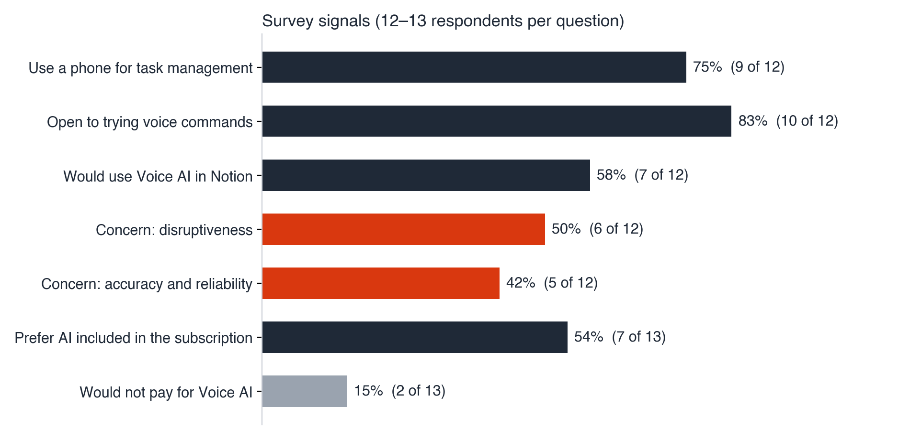
What the answers said, and what I did with each:
| Signal | Decision it drove |
|---|---|
| 9 of 12 manage tasks on their phone, more than laptop | Design mobile-first, ship on mobile and desktop together |
| 10 of 12 have not used voice commands but are open to trying; 7 of 12 would use Voice AI in Notion | Demand is latent, not an existing habit → lower the cost of a first try (free tier and trial) |
| Top concerns: disruptiveness (6 of 12) and accuracy and reliability (5 of 12) | Make correction and refinement core, and start with push-to-talk and visible text instead of an always-listening mode |
| Most requested: hands-free activation, voice task execution, AI summarization | Core command set |
| Most willing to pay for: voice editing, summarization, auto-layout | Defines what goes in the paid tiers |
| 7 of 13 prefer AI included in the subscription; 2 of 13 would not pay | Bundle into the subscription instead of selling a standalone add-on |
Key decision 1 — what to build, and what to leave out
I scored four candidate features with MoSCoW against user value, business viability and technical feasibility.
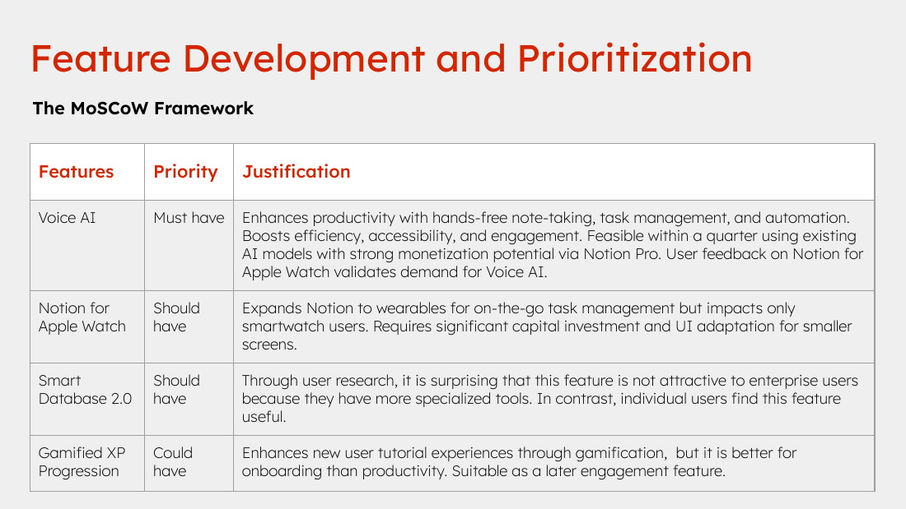
- Voice AI — Must have. Fits the strongest research signals, buildable on existing speech-recognition and LLM capabilities, and has a clear paid-tier path. Notion-for-Apple-Watch feedback also pointed at demand for voice.
- Notion for Apple Watch — Should have. Real on-the-go value, but it reaches only smartwatch users and needs heavy UI and capital investment.
- Smart Database 2.0 — Should have. The surprise: research showed enterprise users don't want it (they already run specialized tools), while individuals do. That split kept it out of the first release.
- Gamified XP — Could have. Helps onboarding more than productivity; a later engagement play.
The solution
Voice AI extends Notion's existing AI entry point rather than adding a separate product. Four capabilities, each traced back to a research finding:
- Create — say what the note should contain; Notion generates it in a predefined structure. (automating note-taking and task management)
- Refine — highlight text, or name the area by voice, and direct edits; the AI can reference earlier documents for consistency. (the accuracy concern → visible, reversible corrections)
- Restructure — turn a paragraph into a table, add rows or columns, autofill empty cells. (task management is the dominant use case)
- Optimize — suggest better wording and elaborations for a highlighted section. (summarization and auto-layout are what people would pay for)
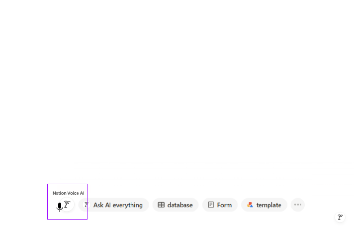
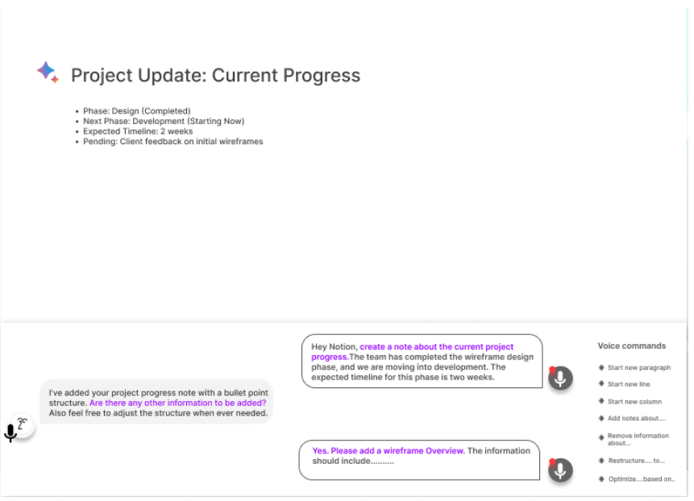
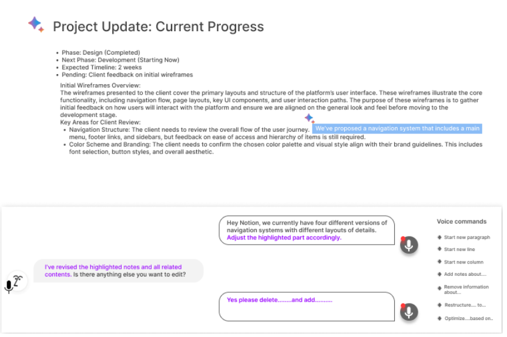

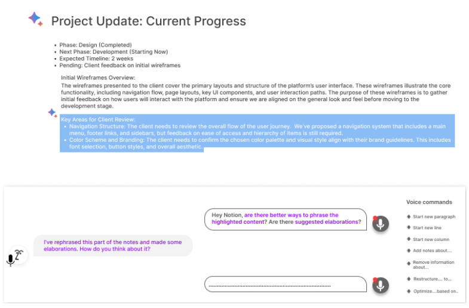
The storyboard follows one busy manager through the flow — creating a team update by voice, adjusting it, restructuring it into a table — finishing in about five minutes.
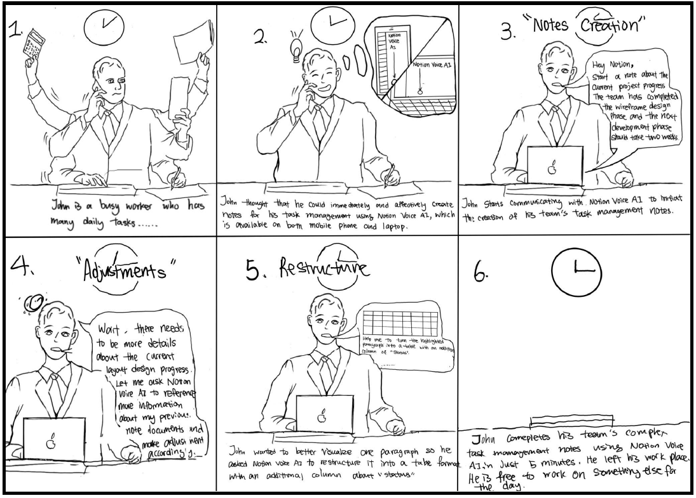
How each stage of the existing journey changes:
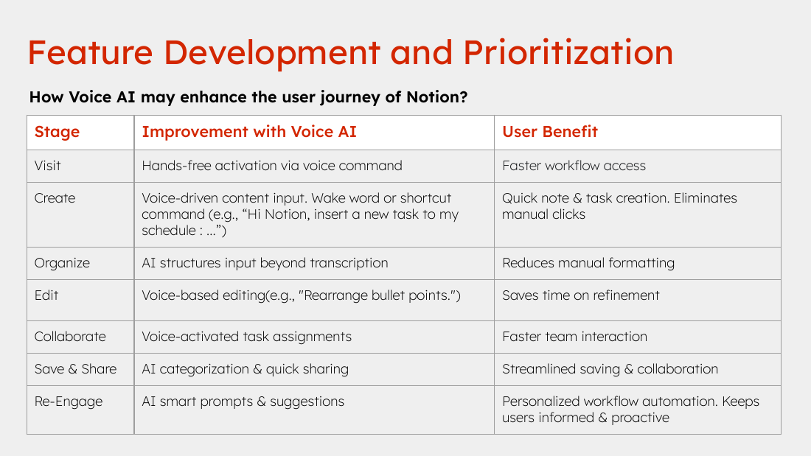
Key decision 2 — pricing: bundle it, tier it, and make the first try free
Benchmark. Comparable AI tools cluster between $10 and $20 a month: Nuclino Sidekick $10, Otter.ai $16.99, Amazon Alexa+ $19.99, ChatGPT Plus $20, with Jasper higher at $39. Most pair a free tier with $10–20 plans.
Proposal. - Free: 5 Voice AI commands a week, enough to build a habit and make losing access after the trial feel costly. - Paid plan ($10 per seat per month, no price increase): core Voice AI — hands-free activation for content creation, voice editing and task execution, plus a 14-day free trial. - Business tier ($15 per seat per month): advanced AI tools — smart summarization, auto-layout structuring, AI-generated reminders and voice-activated database syncing. Priced below competitors, aimed at power users and teams. - Students: 50% discount.
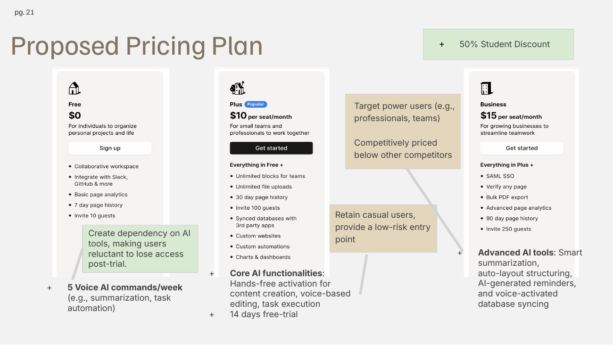
The logic is second-degree price discrimination: heavy users self-select into the higher tier, casual users stay free, and bundling matches the survey, where more respondents preferred AI included in the subscription than any other option.
Testing the pricing with GenAI — and not trusting it blindly
To pressure-test the packaging before any real-user test, I ran a willingness-to-pay simulation: GPT-4o and DeepSeek were given the survey findings and asked to act as a Notion user deciding between the free plan and the new paid options.
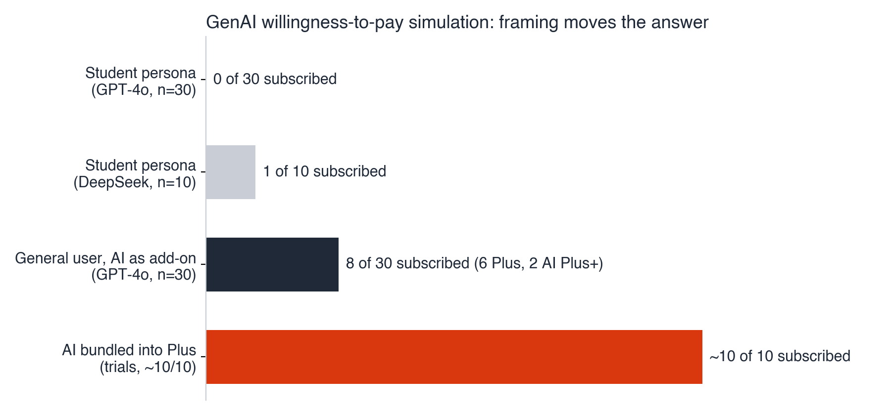
What happened, and what I concluded: - As a student persona, GPT-4o rejected every paid plan (0 of 30) and kept asking for 40–60% discounts; DeepSeek converted 1 of 10. The model had defaulted to a "students are broke" stereotype. - As a general user, 8 of 30 GPT-4o runs paid (6 for the base paid plan, 2 for the higher tier). - When AI was framed as included in the paid plan, almost every run subscribed — but only after I re-stated that point in the prompt, even though it was already in the context. That makes the result partly a product of my wording.
So I used the simulation for direction, not for numbers: it supported bundling, a student discount and a trial, and it showed me where the method fails — it is highly sensitive to framing, stereotypes demographics, treats add-ons as standalone products, and can't model people who start paying only after they've used a feature. Any price point would need a real-user test (below) before launch.
Go-to-market
Positioning. For users: hands-free productivity, seamless mobility, and AI that simplifies complex workflows. For Notion: competitive differentiation in voice-enabled productivity, more Plus and Business subscriptions, and better retention and engagement.
Promotion — one message per audience
The plan follows four principles: speak to each group with its own slogan, turn complex features into tangible benefits, show a usage scenario, and give interested users an immediate next step. I designed concept creatives for three channels.
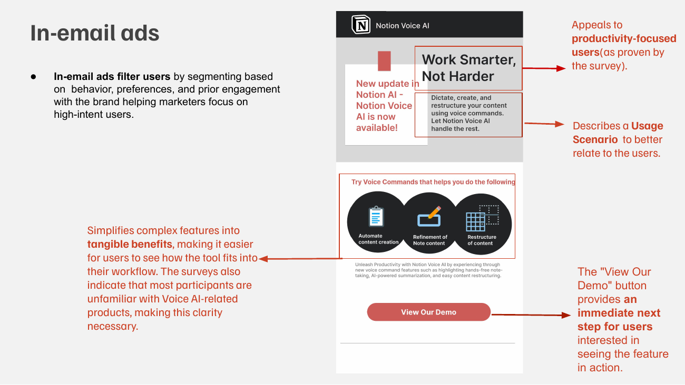
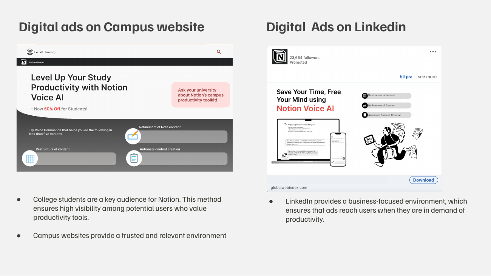
- In-email: segments by behavior and prior engagement to reach high-intent users; "Work Smarter, Not Harder", a short usage scenario, three command examples and a "View Our Demo" button.
- Campus website: students are a core Notion audience, and a campus site is a trusted, relevant place to reach them, paired with the student discount.
- LinkedIn: a business setting that reaches professionals when they are looking for productivity tools.
Customer acquisition — four routes
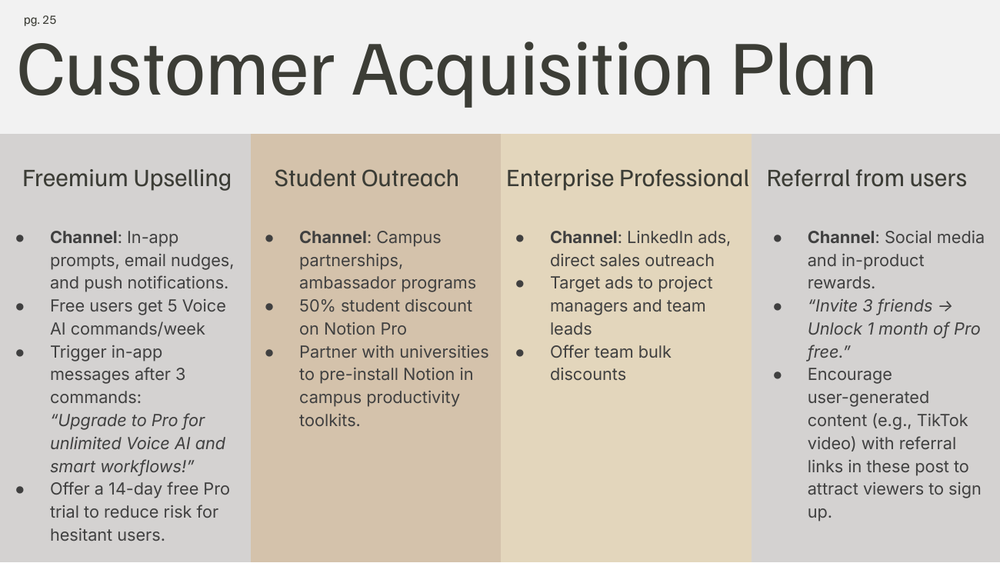
| Route | Channels and tactics |
|---|---|
| Freemium upselling | In-app prompts, email nudges and push notifications; free users get 5 commands a week; an upgrade message triggers after 3 commands; 14-day trial to lower the risk for hesitant users |
| Student outreach | Campus partnerships and ambassador programs; 50% student discount; pre-installing Notion in university productivity toolkits |
| Enterprise professionals | LinkedIn ads and direct sales outreach aimed at project managers and team leads; bulk discounts for teams |
| Referral | Social media and in-product rewards, e.g. "Invite 3 friends, unlock 1 month of Pro free"; user-generated content such as TikTok videos carrying referral links |
Success metrics
Targets for the first six months:
| Objective | Target | Measured by |
|---|---|---|
| Adoption | +20% new-feature adoption in 6 months | Unique users activating Voice AI at least 5 times |
| Utilization | 40% of active users try voice commands in 3 months | Feature activation logs |
| Satisfaction | 4.5 / 5 | Post-interaction survey |
Alongside these I'd watch the transcription-correction rate, first-try command success, free-to-paid conversion, and how many free users hit the 5-command weekly cap.
Rollout and risks
| Phase | Scope | Why this order |
|---|---|---|
| 1 — MVP | Push-to-talk and shortcut activation; voice creation; voice refinement with visible undo, on mobile and desktop | Hits the top-valued commands and answers the accuracy and disruptiveness concerns first |
| 2 — Premium | Restructure into tables, smart summarization, auto-layout; launch the business tier; usage cap on free | These are the features people said they'd pay for, so they carry the monetization |
| 3 — Ambient | Always-on wake word, voice task assignment, proactive suggestions | Highest privacy, battery and cost risk; earn trust first |
The risks I'd plan around:
- Trust and disruption. Accuracy (5 of 12) and disruptiveness (6 of 12) were the top concerns, so every command shows a visible transcript with one-tap undo, keeps a typed fallback, and the always-listening wake word waits until phase 3.
- Privacy. An open microphone is the sensitive part: push-to-talk first, wake word opt-in.
- Free-tier cost. Free commands cost model spend without guaranteed conversion, hence the weekly cap and tracking from cap-hit to paid.
Before launch I'd run a concierge test of the four commands with about 10 mobile users, and a real pricing test (a Van Westendorp survey or a landing-page price test), since the GenAI simulation can only point a direction.
Skills demonstrated
- Product discovery — survey design and analysis tied to the user journey; turning each finding into a design or pricing decision.
- Prioritization — MoSCoW across user value, viability and feasibility, including a counter-intuitive enterprise-vs-individual call.
- PRD & UX — four-capability spec, mockups and a storyboard.
- Pricing & monetization — competitor benchmarking, tiering, free-tier design, student pricing.
- Go-to-market — audience-specific messaging, concept ad creatives, and a four-route acquisition plan.
- Critical use of AI — GenAI simulation used for direction, with its bias and framing limits documented.
- Metrics & risk — OKR-style targets, guardrails, phased rollout, risk plan.